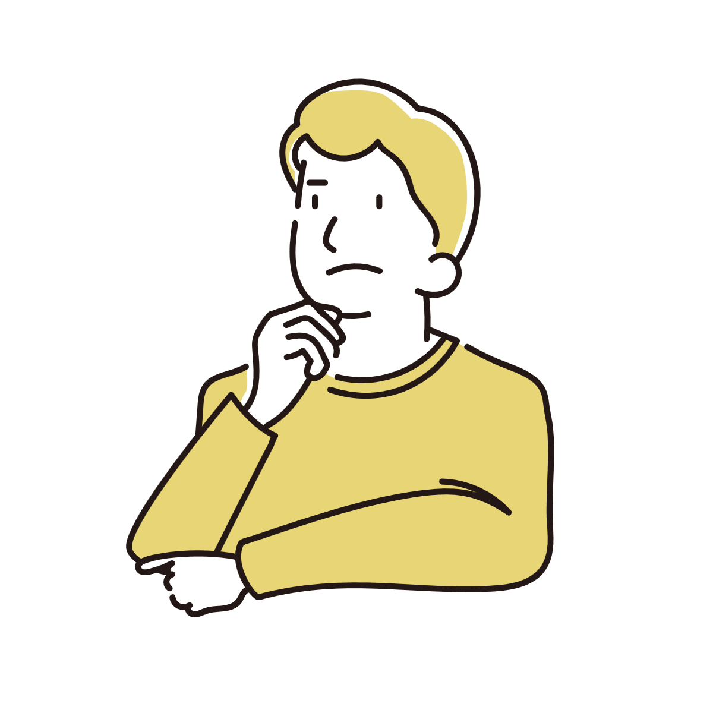
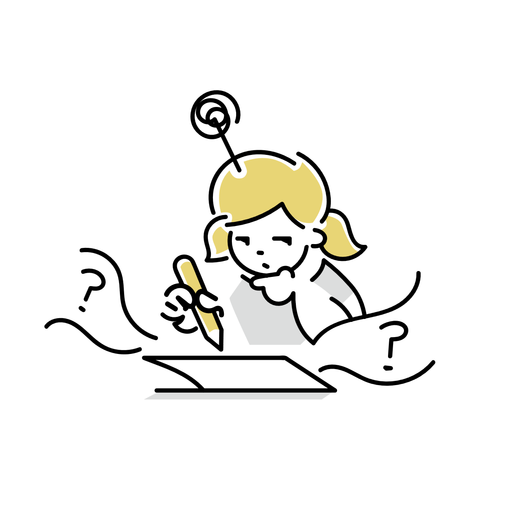
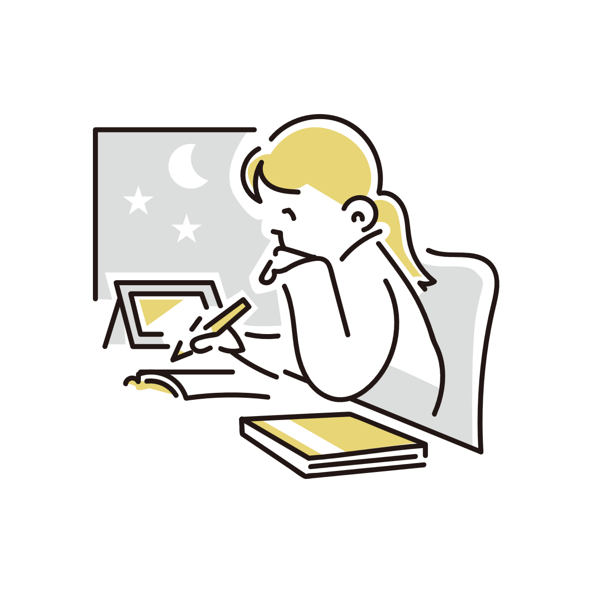
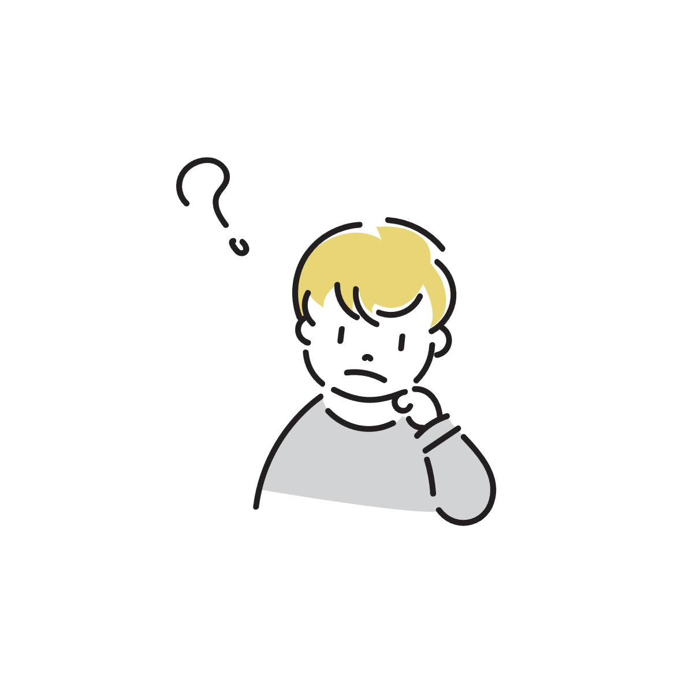

考えるときに顎を手で触ってしまうのはなぜか
考え事をしているとき、無意識に顎へ手を当てていることがあります。 これは単なる癖にも見えますが、実際には集中や姿勢、安心感など、複数の要素が関係していると考えられています。

考えるとき、人は意外と体を使っている
「考える」というと頭の中だけで完結しているように見えますが、実際には姿勢や筋肉の状態も思考に影響しています。
難しい問題を考えるときに視線が止まったり、歩き回ったり、口元に触れたりするのもその一部です。
特に顎や口周辺は感覚が敏感な場所であり、そこへ軽く触れることで、脳が「今は集中する時間だ」と状態を切り替えやすくなる可能性があります。
つまり顎に触れる動作は、「意味のあるポーズ」というより、思考を安定させるための小さな身体操作に近いものです。

顎に触れると落ち着くのはなぜか
顔には細かい神経が集まっており、軽く触れるだけでも脳へ多くの感覚情報が送られます。
そのため、顎に手を添える行為は「触覚による静かな刺激」として働き、注意を一点へ集めやすくなることがあります。
考え込む場面では脳内の情報量が増えやすいため、こうした小さな感覚入力が集中の支えになる場合があります。
姿勢を固定しやすくなる
顎へ手を当てると頭の位置が安定し、姿勢を維持しやすくなります。
人の頭は意外と重く、長時間考え事をしていると首や肩に負担がかかります。そこで手を支えとして使うことで、体の動きを減らしやすくなります。
また、姿勢が固定されることで視線や体の動きも減り、外部の情報へ注意が向きにくくなることがあります。

「考えるポーズ」として学習している面もある
顎に手を当てる動作は、文化的に「思考」のイメージとして広く共有されています。
映画や漫画、広告などでも、「顎に手を当てる＝考えている」という描写は頻繁に使われています。
そのため、人は無意識のうちに「考えるときはこういう姿勢を取るものだ」というイメージを学習している可能性があります。
もちろん全員が真似しているわけではありませんが、身体動作には周囲から学習したパターンが入り込みやすいため、完全に無関係とも言い切れません。
無意識でも「それらしい動き」は増えていく
人は周囲でよく見る仕草を、気づかないうちに取り入れていくことがあります。
顎へ手を当てる動作も、その人自身の集中しやすさだけでなく、「考える人らしい姿勢」として自然に定着している面があるのかもしれません。
不安や緊張と関係している場合もある
顎を触る動作は、状況によっては軽い自己安心行動になっていることもあります。
たとえば、人前で考え込んでいるときや、答えに迷っているときに顎へ触れる人は少なくありません。
これは「自分の体へ触れることで安心感を得る」という、人間によく見られる反応の一種と考えられています。
ただし、これは強い不安を意味するわけではなく、日常的な範囲の行動です。
「顎を触る＝不安」という単純な話ではなく、集中・思考・安心感など複数の要素が重なっていると考える方が自然です。

思考の仕方には個人差がある
顎を触る人もいれば、髪を触る人、歩き回る人、天井を見る人もいます。
これは脳の構造が特別違うというより、「集中しやすい身体の使い方」に個人差があるためです。
静かな刺激で集中できる人もいれば、逆に少し動いていた方が思考しやすい人もいます。
そのため、顎を触る癖自体を特別な性格や心理状態と結びつけすぎる必要はありません。
むしろ、人が考えるときには想像以上に身体を使っている、という視点の方が実態に近いと言えます。
参考情報と注意点
無意識の仕草には個人差があります。特定の動作だけで心理状態を断定できるわけではありません。
関連アイテム
 | 【楽天1位受賞】リストレスト アームレスト 肘置き台 ワンタッチ取付 デスク取付 エルゴノミクス マウス操作 ブラック 価格:2980円 |